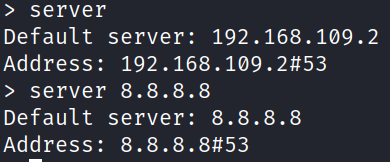

nslookup - name server lookup - returns a DNS record details
example:
nslookup google.com
* no https://
* will return "A" record by default
nslookup can be used as interactive mode by typing "nslookup" without a host name
in interactive mode, multiple commands can be used one after another
server
will give the default server to use
server <ip>
will change the default DNS server of use (8.8.8.8 is for google)

set type=<record type>
this will set the requested record type, A is default, with this command u can ask for AAAA or MX and etc

set debug
will allow the tool to display the full response packets, including any intermediary requests and all of their contents.
this is a lot of data and can contain details like the TTL left, if it's a cached response, all the way to the serial number of the zone file the request was made against.